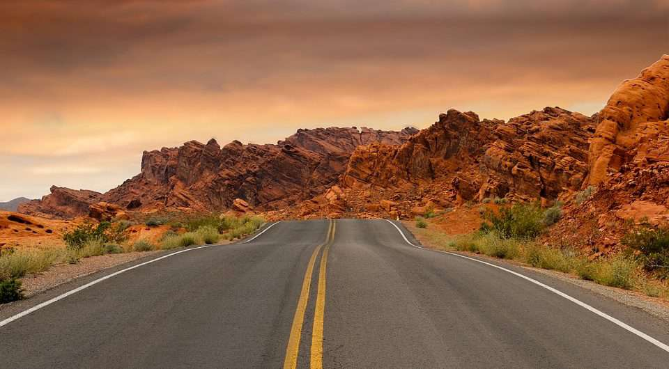

Contrary to this website, photography is not one of my strongest interests. Instead, diplomacy, tennis, and travelling top my list of interests and hobbies.
I love reading about diplomacy and how despite sometimes overwhelming odds, diplomats prevent conflict. It's a mix of independent brilliance, loyalty, and humility.
Tennis has always been a big part of my life, including now at college.
Travel has been and will remain something I value.